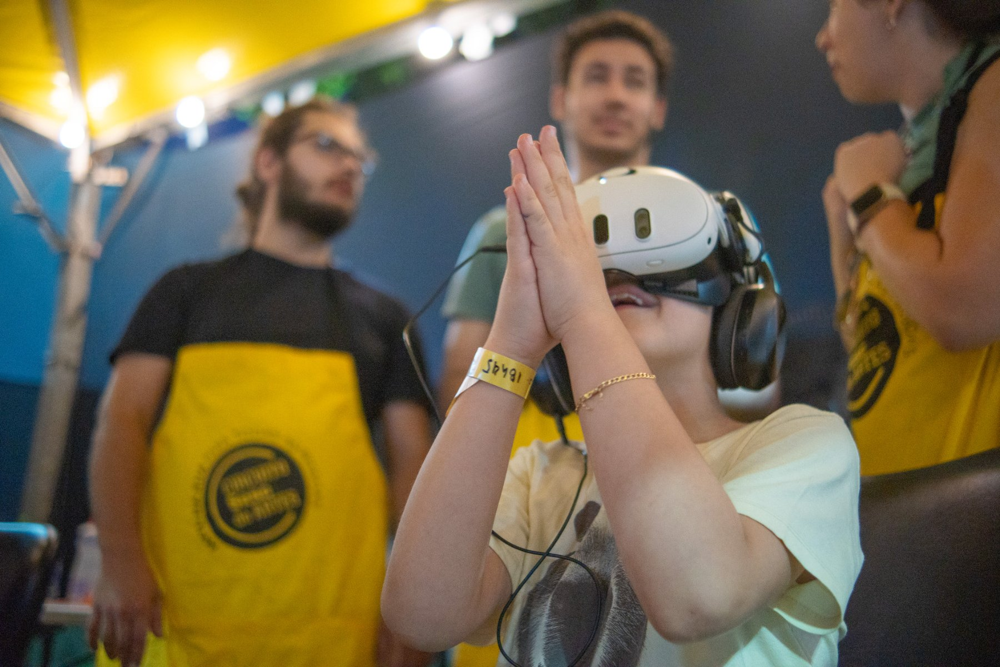

ObraInstalação imersivaCircuito Sesc
Mediação como obra
Sobre a obra
A relação entre mediador e visitante tratada com cuidado curatorial.
Sobre o formato
Instalação imersiva. A obra que se estende para o espaço físico.
A experiência não acontece apenas dentro do headset. Ela ganha presença no espaço.
Também em circulação